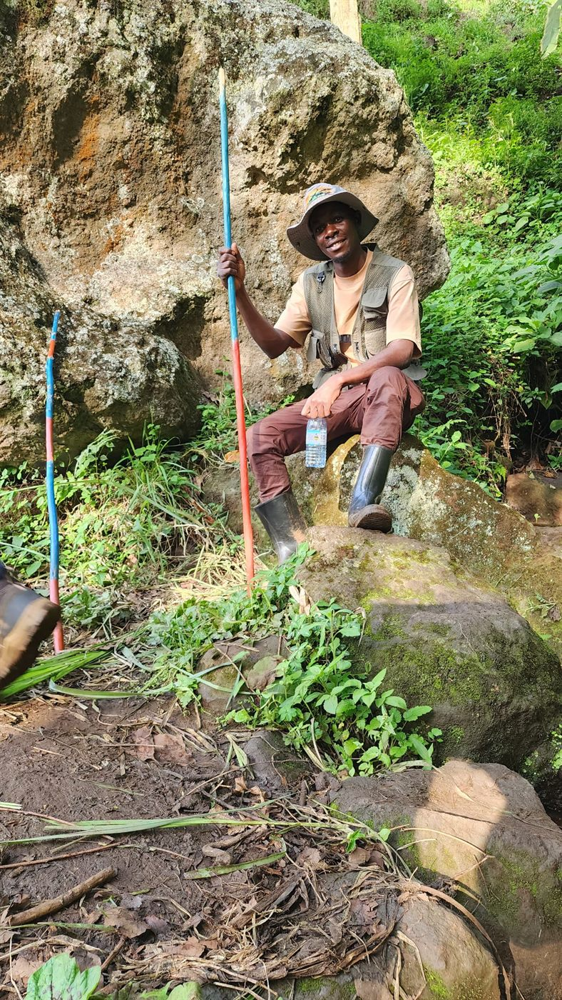
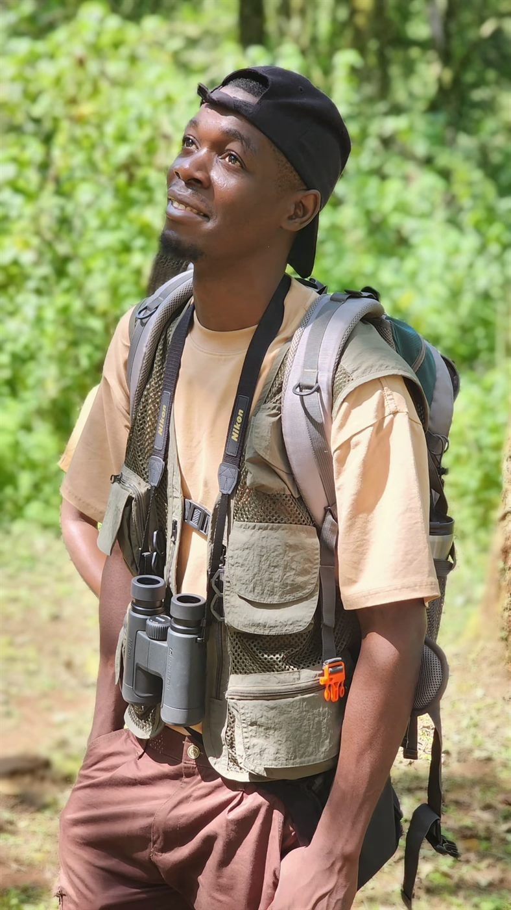
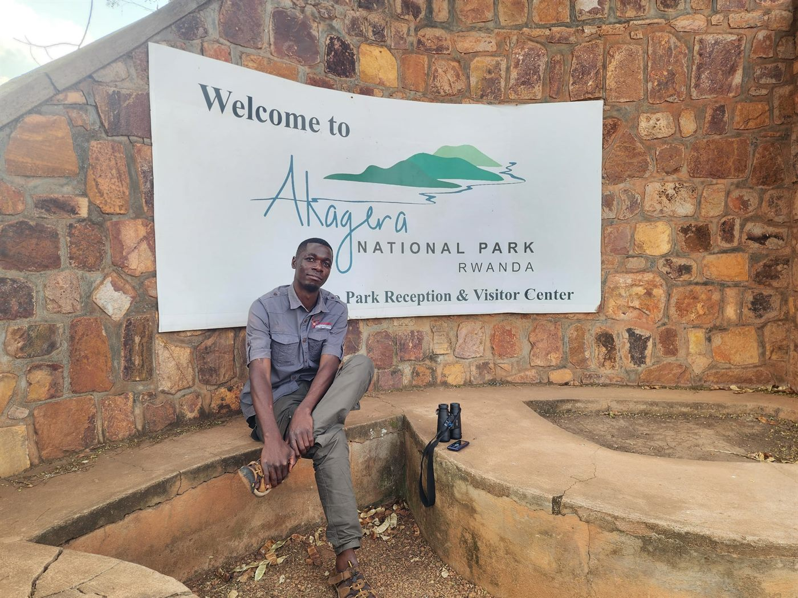

Forest Tracking
Focus: Rocky trail work, forest patience, and field presence.
Ugandan Bush Specialist

Trained and certified safari guide exploring Uganda, Rwanda, Kenya, and Tanzania with guests who want the wild side told with depth, calm, and soul.
Bush specialist

Paius Joshua is a Ugandan nature interpreter, wilderness enthusiast, and trained safari guide shaped by a lifelong connection to the land.
He guides with a simple promise: every animal track, rock formation, bird call, plant, and cultural memory belongs to one living story.
His work covers culture safaris, mammal watching, botany, birdwatching, adventure safaris, wildlife research projects, wildlife photography, and general wildlife expeditions.
Plan a SafariA proud student of nature
Born and raised in Uganda, Paius grew up close to the natural world. His early desire to join the Scouts Club became a deeper pull toward wilderness, conservation, and the stories hidden in African landscapes.
He pursued higher education and graduated with a degree in Development Studies, specializing in Disaster Management. Along the way, he recognized that many community disasters are connected to how people interact with nature. That realization moved him toward nature interpretation, conservation awareness, and prevention.
Paius does not simply say he loves nature; he lives as a lifelong student of it. His guiding philosophy helps travelers see wilderness as an interconnected system where wildlife behavior, geology, plants, culture, and history exist in symbiosis.
His pride in African nature and culture gives his safaris a rare depth. He explores why landscapes carry certain names, why animals and plants were revered by ancestors, and how forgotten ecological knowledge still speaks through local traditions.
Request Full Profile
Real field images from Paius's own safari portfolio.
Portfolio images
Real field moments from Paius's safari work, walking expeditions, culture experiences, park visits, guiding sessions, and guest memories.
Services and packages
Paius works with travelers, photographers, researchers, families, conservation teams, and culture-focused explorers who want more than a drive through a park.
Training, skills, destinations
Uganda, Rwanda, Kenya, and Tanzania.
Languages: Fluent English speaker and sign language communicator.
Guest experience
Styled testimonial cards are in place. Replace these marked slots with real guest names, destinations, and dates when Paius shares verified reviews.